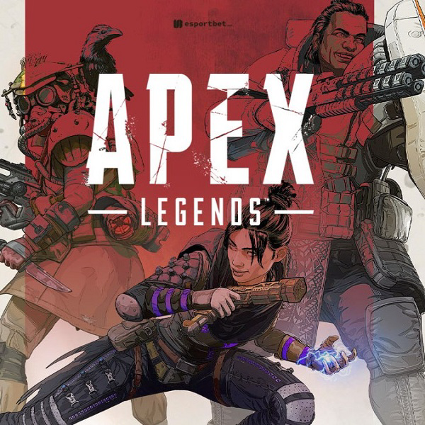

Apex Legends é o único battle royale onde posso me lançar para o céu e desviar de balas no ar enquanto arremesso um mini buraco negro em um esquadrão inimigo enquanto meu companheiro de equipe simultaneamente faz chover um fogo infernal de morteiros sobre eles. Desde seu lançamento em 2019, Apex continuou a crescer e evoluir de maneiras empolgantes, adicionando mais conteúdo e novas ideias a um gênero que frequentemente parece derivado. As partidas em ritmo acelerado nunca deixam de fazer meu coração disparar enquanto eu pulo, deslizo e desvio de balas enquanto disparo um rifle de precisão para vencer um duelo 1v1 e reviver meus companheiros de equipe. Mobilidade, versatilidade e trabalho em equipe se combinam para uma sensação emocionante e gratificante que eu não experimentei em nenhum outro battle royale. Embora a estrutura aqui seja familiar - entre em um mapa grande, pegue saques espalhados aleatoriamente e lute dentro de um círculo cada vez mais fechado para ser o último time sobrevivente - são os 16 personagens jogáveis (chamados de Legends) que impedem Apex de parecer um jogo de tiro battle royale comum. Onde tradicionalmente você começa um battle royale como uma lousa em branco e tem seu papel definido apenas pelo equipamento que você teve a sorte de encotrar, aqui cada um tem seu próprio conjunto de habilidades especiais e pontos fortes que você pode escolher para se adequar ao seu estilo de jogo pessoal. Eu amo especialmente como diferentes Legends podem interagir e trabalhar uns com os outros em uma equipe de três pessoas para obter mais desses poderes do que poderiam sozinhos. E mesmo que algumas lendas se sintam mais fortes do que outras em certas situações, gosto que quem venceria em uma disputa de igual para igual nem sempre será o que determinará sua vitória. O Apex depende mais de sua habilidade pessoal do que dos movimentos específicos de sua lenda, especialmente quando comparado a um atirador de heróis como Overwatch, onde as habilidades realmente importam ao construir uma boa composição de equipe com funções restritivas a serem preenchidas. Em geral, Apex Legends se tornou meu jogo preferido quando quero algo divertido e competitivo. Ser capaz de formar esquadrões com amigos e experimentar diferentes combinações de habilidades de Lenda na busca pela tela de vitória satisfatória do Campeão é a combinação perfeita de emocionante e acessível. As atualizações consistentes evitam que o tiroteio pareça repetitivo e chato, e nenhuma partida é igual à outra, independentemente do modo ou mapa. A combinação de habilidades Legend e seu grande arsenal de armas excelentes é sempre divertido de experimentar, especialmente com um esquadrão de amigos. E embora o problema ocasional de áudio e servidor possa fazer um deslizamento suave de uma montanha ser frustrantemente acidentado às vezes, ainda me pego facilmente gastando horas na fila para “apenas mais um jogo”.